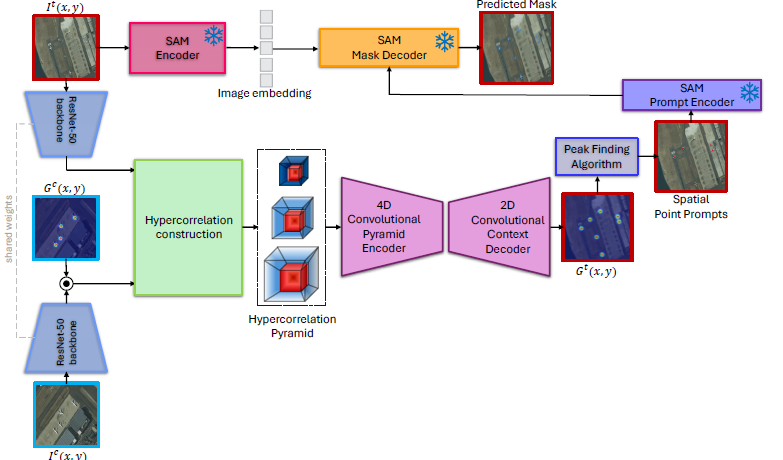
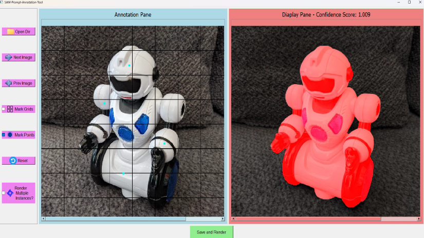
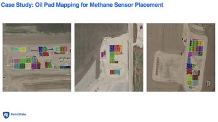
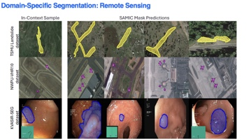

Before: LabelMe
Classic polygon-based annotation in LabelMe — manually tracing object boundaries pixel by pixel. Even a single image takes considerable time.
Research Project
1Department of Computer Science and Engineering, The Pennsylvania State University
2Schlumberger-Doll Research, Cambridge, Massachusetts
3Department of Civil and Environmental Engineering, The Pennsylvania State University
A compact 2.6M-parameter network that learns to prompt the Segment Anything Model (SAM) for few-shot segmentation — paired with SamBox, a custom annotation tool built from scratch for rapid, high-quality training data collection.

Semantic segmentation — identifying which pixels belong to specific objects in images and videos — is fundamental to applications ranging from medical imaging to aerial remote sensing. Yet it is impossible to build comprehensive, pixel-labeled datasets for every object class we might encounter in the wild.
Few-shot segmentation addresses this gap: given only one or a handful of labeled reference images for a new object class, a model should learn to segment that class in unseen images. State-of-the-art approaches typically rely on large specialist models (45M+ parameters) trained on massive datasets of unrelated objects, then adapted to each new domain — a process that is expensive in compute, energy, and annotation effort.
Vision foundation models (VFMs) such as the Segment Anything Model (SAM) offer a different path. SAM can produce high-quality masks when given spatial prompts (points, boxes, or masks), but it is class-agnostic: it does not know which objects you care about until you tell it. Prior training-free prompt-engineering methods (e.g., PerSAM, Matcher) match embedding similarity between reference and target images, but they are brittle — easily distracted by color, orientation, background clutter, and multiple object instances.
SamIC (Segment Anything with In-Context spatial prompt engineering) is a lightweight network that learns how to prompt SAM for new segmentation tasks from a small set of in-context examples. Instead of retraining a large segmentation backbone for every new domain, SamIC treats segmentation as a prompt-engineering problem: it predicts where to place spatial point prompts on a target image so that SAM produces the correct mask.
At only 2.6 million parameters — roughly 1/20th the size of leading few-shot segmentation models — SamIC trains in about 20 minutes on a single GPU and generalizes across diverse tasks including one-shot segmentation, semantic segmentation, video object segmentation, and domain-specific applications in aerial and medical imaging.
Crucially, SamIC does not require large labeled datasets. In our experiments, it performs competitively using only 20% of the training data provided by standard one-shot benchmarks — and in practice, only a few labeled images per object class are needed for SamIC to learn effective spatial prompts and generalize to new images.
SamIC is only as good as the spatial prompts it learns from. SamBox is a custom annotation tool we built entirely from scratch to collect high-quality, unambiguous point prompts at scale — and it also works as a stand-alone segmentation annotation tool for any project.

SamBox is an interactive, SAM-powered annotation tool designed and implemented from the ground up for collecting spatial point prompts used to train SamIC. Unlike traditional pixel-wise annotation tools (e.g., LabelMe), SamBox leverages SAM's mask decoder to produce segmentations from sparse clicks — turning annotation from a tedious tracing task into a rapid prompt-refinement workflow. Although built to support SamIC's training pipeline, SamBox functions independently as a general-purpose segmentation annotation platform.
All images slated for annotation are run through SAM's image encoder once (~20 seconds per image on an NVIDIA RTX 2080 Ti). Embeddings are cached to disk so subsequent prompting is fast.
The annotator places spatial point prompts on each object. SamBox queries SAM with the cached embedding, displays the mask and confidence score, and the user adds corrective prompts until the segmentation is correct and confidence saturates near 1.
Once satisfied, the user clicks "Save and Render." Point prompts and masks are written to JSON and image files. SamBox advances to the next image in the batch.
Saved point prompts are converted into 2D Gaussian heat maps and used as supervision signal. SamIC learns to predict analogous heat maps on unseen target images, from which peak-detection extracts the prompts sent to SAM at inference time.
SAM's image encoder clusters features by color, texture, and part-level appearance. A single point prompt often segments only one part of an object (e.g., text on a can rather than the whole can). SamBox embeds this insight: as users add prompts covering multiple part-level clusters, the confidence score rises until it saturates — signaling that the prompt set is unambiguous and provides a strong learning signal for SamIC.
Compared to manual pixel-wise annotation with LabelMe, SamBox delivers substantial speedups that scale with GPU capability:
A typical image can be annotated in under 60 seconds on an RTX 2080 Ti. Because SamIC needs only a few labeled images per class, these speedups make it practical to bootstrap a new segmentation task in minutes rather than hours.
Side-by-side demonstrations of the same annotation task. LabelMe requires painstaking pixel-wise polygon tracing; SamBox produces the same mask with a handful of point prompts.
Classic polygon-based annotation in LabelMe — manually tracing object boundaries pixel by pixel. Even a single image takes considerable time.
The same object annotated with SamBox — a few spatial point prompts and SAM produces the mask in seconds.
SamIC across diverse downstream segmentation tasks. Flip through the deck — use arrows, dots, keyboard (← →), or swipe on mobile.


If you find SamIC or SamBox useful in your research, please cite:
@article{nagendra2024samic,
title={SamIC: Segment Anything with In-Context Spatial Prompt Engineering},
author={Nagendra, Savinay and Rashid, Kashif and Shen, Chaopeng and Kifer, Daniel},
journal={arXiv preprint arXiv:2412.11998},
year={2024}
}